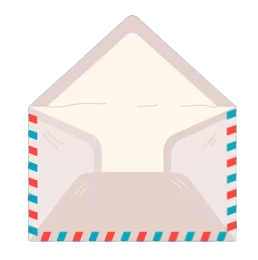
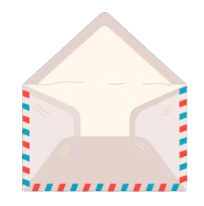
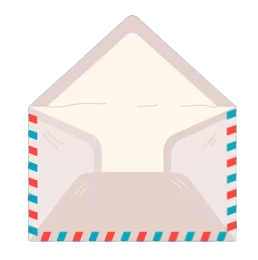

Eu quero mandar isso pra entender tudo de vez e decidir o que vou fazer logo 💌
Clique no envelope para começar...
 

Clique no envelope para começar...

bom dia, boa tarde ou talvez boa noite... não sei quando você vai ler isso, mas enfim, tá aÃ. talvez você já esteja enjoada dos meus textos enormes, mas esse é o último — ou pelo menos eu espero que seja... ainda não sei por que ainda gosto de você, mas sinceramente, você pra mim é tudo que eu sempre quis em uma garota.
Quero que, quando você leia isso, saiba que tem alguém que pensa e ora por você todos os dias. Alguém que torce por você em silêncio e quer te ver sorrir de verdade.
Eu sempre vou te esperar. Independente do momento e da distância, eu sempre estarei aqui pra você. Eu sou o mesmo bobo apaixonado, e acho que sempre vou ser.